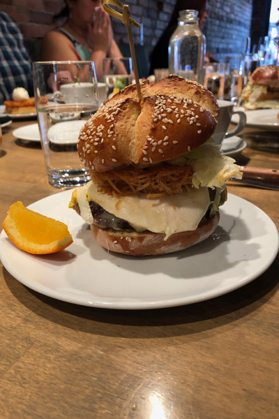

Top Five Brunch Spots in Vancouver
- Fable Kitchen
- Fable Kitchen is the first restaurant from celebrity Chef Trevor Bird. Offering a seasonally changing, farm-to-table menu, Chef Bird makes some of the best food in town.
- Bao Bei
- Bao Bei is a Chinese fusion restaurant located in Vancouver's Chinatown neighbourhood. With their unique blend of western and eastern flavours and a seasonally changing menu, this is one to visit on a regular basis.
- Les Faux Bourgeois
- Located in the Kingsway neighbourhood of Vancouver Les Faux Bourgeois brings the best of classic French cuisine to the city. Definitely try their steaks.
- Ousi Bistro
- Gumbo and po boys and jambalaya and jazz music, Ousi Bistro brings New Orleans to the pacific northwest. Check them out in the South Granville Rise.
- L'Ufficio at La Quercia
- Don't ask questions, just head to L'Ufficio, sister space of La Quercia, for the best Italian, multi-course Cena alla Famiglia you will have in Vancouver.
